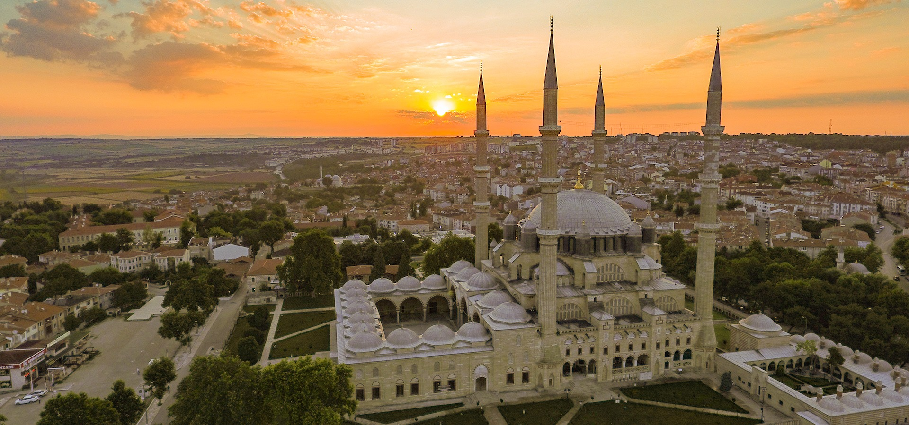

Edirne
Edirne, Türkiye'nin en batısında olan şehirdir. Marmara Bölgesi'nin Trakya kesiminde, Yunanistan ve Bulgaristan sınırında yer almaktadır. Edirne, 1363'ten 1453'e kadar Osmanlı İmparatorluğu'nun başkentiydi. 2020 sayımına göre toplam nüfusu 180.901'dir.
Edirne
Osmanlı dönemi'ndeki adı Edrine (ادرنه) yunanca adından türetildi. İngilizcede Adrianople olarak yazılır, 1928'deki Türk harf devrimi'nin ardından Edirne uluslararası alanda kabul edilen yeni adı olmuştur.
Mirasımız
Selimiye Camii
Selimiye Camiî, Osmanlı padişahı II. Selim döneminde Mimar Sinan'ın yaptığı ve Osmanlı'nın önceki başkenti Edirne'de bulunan bir külliyedir. Mimar Sinan'ın 80 yaşında yaptığı ve "ustalık eserim" şeklinde nitelendirdiği Selimiye Camii, gerek Mimar Sinan'ın, gerek Osmanlı mimârîsinin en önemli eserleri arasında sayılır
Saraçlar Caddesi
Edirne Çarşısının bulunduğu merkezi yerdir. Kapalı Ali Paşa çarşısı, dükkanlar vb. birçok yere Saraçlar Caddesi ile ulaşılır.
Lozan Anıtı